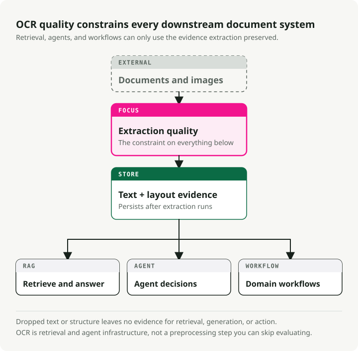
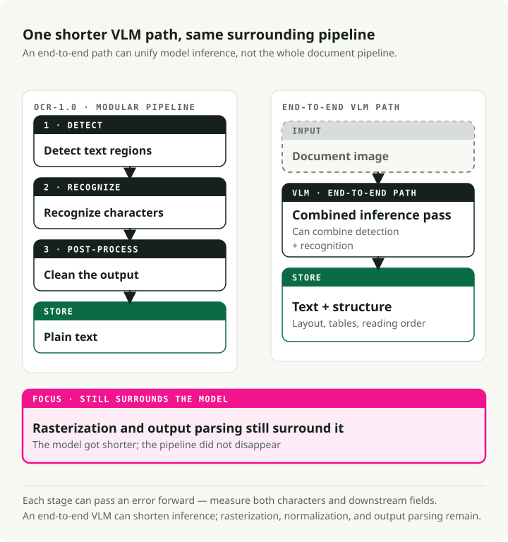
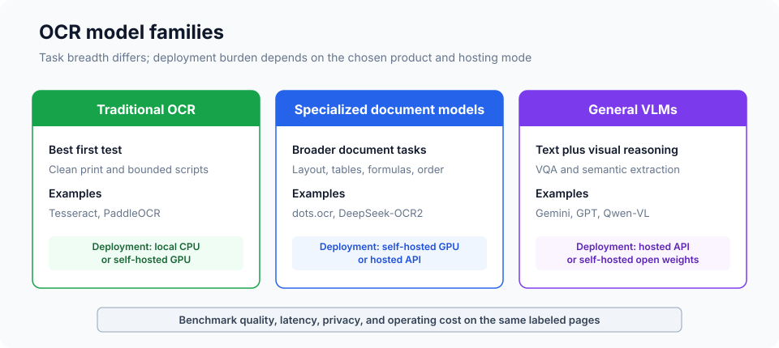
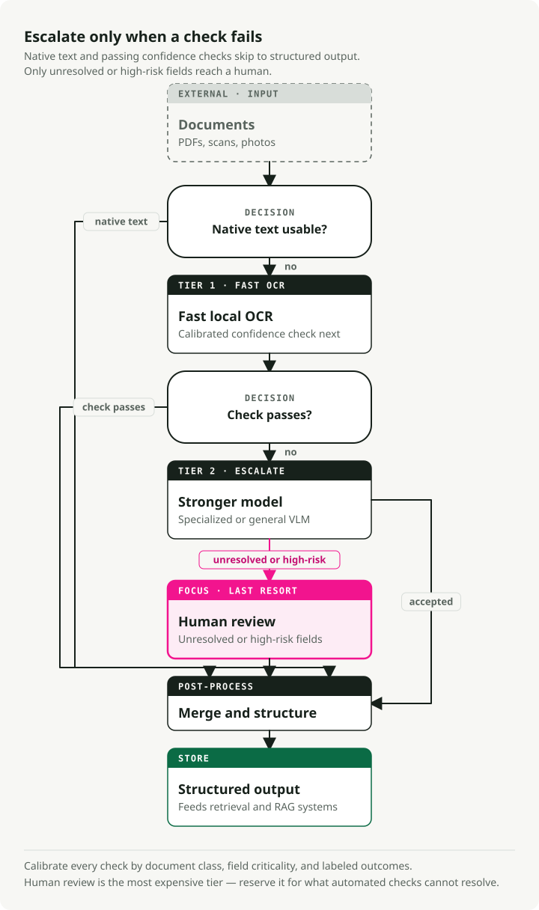

The Definitive Guide to OCR in 2026: From Pipelines to VLMs
OCR leaderboards disagree because they test different documents, outputs, and judges. An early-2026 snapshot of OmniDocBench and OCR Arena produced sharply different model orderings; the scores are not interchangeable, but the disagreement is useful. A production choice needs documents and metrics from the actual workload.
Vision-language models (VLMs) can handle layout, handwriting, tables, and degraded images that break a plain text-recognition pipeline. Traditional engines remain competitive on clean print, especially when CPU latency and operating cost matter. Specialized models such as dots.ocr and general VLMs occupy the middle and upper tiers, with different hardware, privacy, and quality trade-offs.
Traditional engines remain the fastest and cheapest choice for clean printed documents. No model wins in every scenario, so this guide moves from evaluation to model selection and finally to production deployment.
Companion repo: The OCR Gauntlet — a single-notebook demo comparing 5 document types across 3 model tiers (Tesseract → dots.ocr → Gemini 3 Flash) to expose the quality cliffs and cost trade-offs.
TL;DR: Start by checking for an embedded text layer. Benchmark a traditional engine on clean scans, then add a specialized or general VLM only for document classes that miss the quality target. Compare text, table, and field metrics separately, and route low-confidence or high-risk fields to another model or a human.
OCR now sets downstream quality
OCR has long powered archives, postal systems, accessibility tools, and document management. RAG and document agents made its failure modes visible to a wider group of engineers: a downstream model cannot recover text or table structure that extraction discarded.

Your RAG system's retrieval quality is capped by OCR quality. If extraction garbles a table, misreads a date, or drops a paragraph, later chunking and embedding changes cannot recover the missing information. The same failure can hide a contract clause, change an invoice total, or corrupt a medical record. OCR errors propagate into every downstream decision.
OCR is therefore part of retrieval and agent infrastructure, alongside parsing, chunking, embedding, and indexing. Its errors need their own evaluation rather than being absorbed into a single end-to-end score.
What OCR means in the age of foundation models
OCR has outgrown its original definition of "convert printed text into machine-readable characters." Today it's document intelligence: extracting text, structure, tables, formulas, and semantic meaning from any visual input. The field is moving from "OCR-1.0" (modular pipelines) to "OCR-2.0," where one end-to-end model handles all the stages.

The traditional OCR pipeline has three core stages:
- Text detection: locate regions containing text (e.g., CRAFT, DBNet).
- Text recognition: convert detected regions into character sequences (e.g., CRNN).
- Post-processing: spell-checking and language-model correction.
This works well for clean documents, but detection, recognition, and post-processing errors can compound. Measure both character accuracy and downstream field accuracy so a readable page does not hide a wrong total or identifier.
OCR-2.0 collapses more of that pipeline into a vision encoder plus language decoder. Models such as GOT-OCR 2.0 can emit text and structure together, while general VLMs can also map fields to a requested schema. The trade-offs are workload-specific latency, GPU or API cost, and the risk of plausible text that is absent from the image.
A practical caveat: don't let the "end-to-end" label fool you. In production, OCR-2.0 is only unified at the recognition stage. You still need PDF rasterization to produce images, image normalization (deskew, DPI adjustment) for consistent quality, and output parsing to pull structured fields out of the model's text. The pipeline got shorter, not extinct.
What OCR benchmarks measure and miss
The following datasets illustrate how different OCR tasks produce different metrics. Scores are dated snapshots from their respective leaderboards rather than a live cross-dataset ranking:
| Dataset | Year | Test Size | Languages | Primary Metric | Top Score | Saturation |
|---|---|---|---|---|---|---|
| FUNSD | 2019 | 50 docs | English | F1 | ~93.5% | Moderate |
| SROIE | 2019 | 347 receipts | English | F1 | ~98.7% | Near-saturated |
| CORD | 2019 | 100 receipts | Indonesian | F1 | ~98.2% | Near-saturated |
| IAM | 1999 | ~1,861 lines | English | CER | ~2.75% | Moderate |
| OCRBench v2 | 2024 | 1,500 private | EN + CN | Score /100 | 63.4 | Low |
| OmniDocBench | 2024 | 1,355 pages | EN + CN | Composite | 94.62 | Low-moderate |
The "benchmark vs. arena" gap
Automated benchmark rankings can conflict with human preference because the input distribution and judging criteria differ.
| Model | Reported OmniDocBench metric | OCR Arena ELO | Arena win rate | Observation |
|---|---|---|---|---|
| GLM-OCR | 94.62 | 1321 | 18.8% | High bench, low arena |
| Gemini 2.5 Pro | 88.03 | 1569 | -- | Good bench, good arena |
| Gemini 3 Flash | 0.115 ED (lower=better) | 1770 | 77.2% | High arena rank in snapshot |
| DeepSeek-OCR | Good | 1335 | 20.2% | High bench, low arena |
In the early-2026 OCR Arena snapshot used here, users voted blindly on head-to-head outputs. Its ordering differed from OmniDocBench. The two tables should not be combined into one score because one uses dataset metrics and the other preference votes.
The likely drivers include document mix, output formatting, language coverage, and judge criteria. Published numbers are useful for screening, but final selection needs a held-out set from the target workload.
Traditional OCR engines: still relevant
If traditional engines are worse on complex data, why use them? Because they're fast and cheap on clean structured data.
| Engine | Reported CPU latency | Clean-print accuracy | Languages | Smallest reported package |
|---|---|---|---|---|
| Tesseract 5.5 | ~0.5 s/page | 98–99% character accuracy | 100+ | ~30 MB |
| EasyOCR | ~2 s/page | 95–97% character accuracy | 80+ | ~200 MB |
| PaddleOCR v5 | ~1 s/page | 97–99% character accuracy | 106+ | 3.5 MB (mobile) |
Tesseract for clean print
Tesseract (v5.5.x, Apache 2.0) is a mature CPU-only engine with 100+ language packs. Clean-print accuracy can be high after appropriate rasterization and preprocessing, but handwriting, scene text, and complex layouts need separate testing. Its main advantage is a small, local CPU deployment rather than a universal accuracy lead.
EasyOCR
EasyOCR pairs a CRAFT detector with a CRNN recognizer. With full PyTorch GPU acceleration, it's a fast option for quick prototyping and scene text.
import easyocr
# Three lines for complete OCR
reader = easyocr.Reader(["en"])
result = reader.readtext("receipt.jpg")
# Returns: [(bbox, text, confidence), ...]
PaddleOCR
PaddleOCR (PP-OCRv5) packages detection, recognition, and deployment components. Its documentation reports coverage for 106+ languages and a small mobile model for edge use. Verify the exact model artifact and language quality for the selected release.
from paddleocr import PaddleOCR
ocr = PaddleOCR(use_angle_cls=True, lang="en")
result = ocr.ocr("receipt.jpg", cls=True)
for line in result[0]:
bbox, (text, confidence) = line
if confidence > 0.85:
print(f"{text} ({confidence:.2f})")
Specialized and general VLM options

Crooked receipts, skewed product labels, handwriting, and dense layouts are where specialized or general VLMs become worth testing against traditional engines.
The specialized OCR wave
Specialized document-parsing models published in 2025–2026 include:
- dots.ocr (1.7B): An open-source model that unifies layout detection, recognition, and reading order. Its report includes 100+ languages and strong OmniDocBench results.
- GOT-OCR 2.0: A 580M parameter unified model that runs on a single consumer GPU (~4GB VRAM) and outputs Markdown, LaTeX, and structured notation.
- DeepSeek-OCR (3B): Introduced “contextual optical compression” to reduce visual tokens. Treat its throughput figures as hardware- and dataset-specific.
- Mistral OCR v3: A proprietary text-and-structure extraction service. Pricing and benchmark numbers change, so check the current model card and provider terms when comparing it.
Frontier VLMs
General VLMs are another option when the task combines extraction with visual or semantic reasoning. The examples below reflect the article's early-2026 snapshot, not a current ranking:
- Qwen3-VL (Alibaba): An open-weight VLM family with several sizes and long-context variants.
- Gemini 3 Flash (Google): A hosted multimodal model that ranked highly in the cited OCR Arena snapshot.
- Claude Opus 4.6 (Anthropic): A hosted general VLM with structured-output support.
- GPT-5.2 (OpenAI): A hosted general VLM for mixed visual and text inputs.
Latency by tier
The ranges below are planning placeholders. Re-measure them with the actual page resolution, batch size, hardware or provider region, and output length:
| Tier | Example | Latency/page | Hardware |
|---|---|---|---|
| Traditional | Tesseract, PaddleOCR | 0.5–3s | CPU |
| Specialized VLM | dots.ocr, GOT-OCR | 3–8s | GPU |
| Frontier VLM | Gemini Flash, GPT-5.2 | 5–15s | API |
Metrics: measuring what matters
Pick a metric that matches the output type:
- CER and WER for plain text. Character and Word Error Rate depend on normalization choices such as case, whitespace, and punctuation, so fix the comparison protocol before comparing models.
- EMR and Field F1 for forms and receipts. Exact Match Rate is binary, which is what you want for tax IDs and totals. Field F1 balances precision and recall per field type.
- TEDS for tables. Tree Edit Distance over HTML tree representations catches multi-hop cell misalignment that CER hides.
- ANLS for document VQA. Average Normalized Levenshtein Similarity gives partial credit for answers with minor OCR errors.
For implementations: jiwer handles CER/WER out of the box, and TEDS implementations live in the OmniDocBench repo.
Testing VLMs with OpenRouter
OpenRouter provides an OpenAI-compatible gateway to models from several providers. Model IDs and supported request features change, so verify them against the gateway's current catalog before running the example.
import base64
from openai import OpenAI
client = OpenAI(base_url="https://openrouter.ai/api/v1", api_key="your-key")
def extract_text(image_path: str, model: str) -> str:
with open(image_path, "rb") as f:
image_b64 = base64.b64encode(f.read()).decode()
response = client.chat.completions.create(
model=model,
messages=[{
"role": "user",
"content": [
{"type": "text", "text": "Extract all text from this image, preserving layout as markdown."},
{"type": "image_url", "image_url": {"url": f"data:image/jpeg;base64,{image_b64}"}},
],
}],
max_tokens=4096,
)
return response.choices[0].message.content
# Compare models by changing one string
models = ["google/gemini-3-flash", "anthropic/claude-sonnet-4.5", "qwen/qwen3-vl-8b"]
for model in models:
print(f"\n--- {model} ---\n{extract_text('receipt.jpg', model)[:200]}...")
For structured extraction, use response_format with a JSON schema when the selected model and gateway support it. This can make the response parseable; it does not validate extracted values against the image:
import json
response = client.chat.completions.create(
model="google/gemini-3-flash",
messages=[{
"role": "user",
"content": [
{"type": "text", "text": "Extract the receipt fields from this image."},
{"type": "image_url", "image_url": {"url": f"data:image/jpeg;base64,{image_b64}"}},
],
}],
max_tokens=4096,
response_format={
"type": "json_schema",
"json_schema": {
"name": "receipt",
"schema": {
"type": "object",
"properties": {
"vendor": {"type": "string"},
"date": {"type": "string"},
"items": {
"type": "array",
"items": {
"type": "object",
"properties": {
"description": {"type": "string"},
"amount": {"type": "number"},
},
},
},
"total": {"type": "number"},
},
},
},
},
)
receipt = json.loads(response.choices[0].message.content)
Benchmark results: what the numbers actually show
The table below is a dated snapshot from the OmniDocBench leaderboard and dots.ocr paper (arXiv:2512.02498). It compares results reported in that evaluation, not current model versions:
| Model | Size | Text Edit Dist (EN) | Table TEDS | Overall |
|---|---|---|---|---|
| PaddleOCR-VL | 0.9B | 0.035 | 90.89 | 92.86 |
| dots.ocr | 1.7B | 0.048 | 86.78 | 88.41 |
| Gemini 2.5 Pro | — | 0.075 | 85.71 | 88.03 |
| MinerU (pipeline) | — | 0.209 | 70.90 | 75.51 |
| GPT-4o | — | 0.217 | 67.07 | 75.02 |
In this snapshot, PaddleOCR-VL and dots.ocr score above the listed general VLMs. The conclusion is limited to OmniDocBench: model size alone does not predict its document-parsing score.
🔧 Run it yourself: The OCR Gauntlet is a single runnable notebook that tests five document types (clean invoice, crumpled receipt, handwritten form, academic paper, multilingual doc) across three tiers (Tesseract → dots.ocr → Gemini 3 Flash), showing CER/EMR side-by-side with cost analysis.
Deploying OCR in production
A tiered architecture can separate CPU preprocessing from GPU or API inference and reserve expensive paths for documents that need them.

Note on orchestration: Tools such as Docling can coordinate conversion, batching, and retries. The routing policy still needs its own quality labels and thresholds.
The tiered fallback pattern
Start with the cheapest path that meets the quality target, then calibrate routing on labeled pages:
- Check for embedded text (Tier 0). For PDFs, inspect the text layer with
PyMuPDForpdfplumberbefore rasterizing, but validate that the layer is complete and correctly ordered. - Attempt with a fast model. Use a traditional engine for document classes on which it meets the target.
- Evaluate calibrated confidence. Combine model confidence with document class, field criticality, and validation rules.
- Escalate to a stronger model. Route uncertain pages to a specialized or general VLM.
- Escalate high-risk failures to a human. Human review is a separate tier for values whose cost of error exceeds the automation benefit.
Note on confidence: Raw character probabilities are not automatically calibrated to field correctness. The area-weighted function below is a baseline for page-level aggregation, not a universal router. Calibrate it against labeled pages, and give critical fields their own rules because a page average can hide a wrong ID or total.
def area_weighted_confidence(ocr_result):
"""Compute area-weighted confidence from PaddleOCR output."""
total_area, weighted_sum = 0, 0
for line in ocr_result[0]:
bbox, (text, conf) = line
width = bbox[1][0] - bbox[0][0]
height = bbox[2][1] - bbox[1][1]
area = abs(width * height)
weighted_sum += conf * area
total_area += area
return weighted_sum / total_area if total_area > 0 else 0
Cost analysis at scale
There is no universal page-volume break-even between an API and self-hosting. Build the comparison from the same workload:
| Cost component | API path | Self-hosted path |
|---|---|---|
| Inference | Current page- or token-based price | GPU-hours at measured pages/hour |
| Idle capacity | Usually absorbed by provider | Utilization and capacity slack |
| Engineering | Integration and provider monitoring | Deployment, upgrades, observability, and on-call |
| Data handling | Transfer, retention, and region terms | Storage, network, and compliance controls |
| Quality failures | Retries and human review | Retries and human review |
Use a shared formula: monthly pages × cost per successful page + review cost + fixed operating cost. A “successful page” must meet the same text, table, and field criteria on both paths. Provider prices and GPU rentals change too quickly to embed as a durable procurement estimate.
Error handling: the hallucination problem
VLM errors can be contextually plausible and factually wrong. A receipt total of “$42.50” might become “$45.20”: syntactically valid, but invisible to a spell-checker.
Synthetic failure example: A VLM extracts three receipt line items and a stated total that agree with one another, but one digit differs from the image. Internal arithmetic passes even though the extraction is wrong. This is why validation needs image-grounded labels or an independent review path, not only consistency checks.
A few practical mitigations:
- Checksum validation. For invoices, verify that line item amounts sum to the stated total, and flag mismatches for human review.
- Regex sanity checks for dates (no month 13), phone numbers (correct digit count), and currency formats.
- Cross-reference line items vs. totals. Compare the VLM's extracted subtotal against an independent sum of its own extracted line items.
- Cross-model verification. Run critical fields through two different models and flag disagreements.
- Independent OCR cross-check. Run a second extraction path on critical figures and flag disagreements. Agreement raises confidence only when the two paths have sufficiently different failure modes; it is not proof of correctness.
Key takeaways
- Match the model tier to a labeled document class. Traditional engines can be sufficient for clean text; specialized and general VLMs should earn their added cost on harder pages.
- Do not merge unlike leaderboards. OmniDocBench metrics and OCR Arena preferences answer different questions.
- Calibrate routing. Confidence thresholds, document classes, field criticality, and human-review policy belong in one evaluation.
- Validate plausible output. Schema conformance and internal arithmetic cannot prove that a value appears in the image.
- Price successful pages. Include retries, review, fixed operations, and quality gates when comparing APIs with self-hosting.
Preprocessing and detection still matter, but production OCR now also requires routing, task-specific evaluation, and defenses against plausible extraction errors.
References
- OCR Arena Leaderboard - Crowdsourced, head-to-head model battles
- The OCR Gauntlet repo - Runnable notebook for testing the three-tier OCR architecture
- OmniDocBench - End-to-end document parsing eval
- dots.ocr - 1.7B parameter unified VLM document parser
- PaddleOCR - Traditional OCR toolkit and models
- OpenRouter - Unified access gateway for A/B testing models